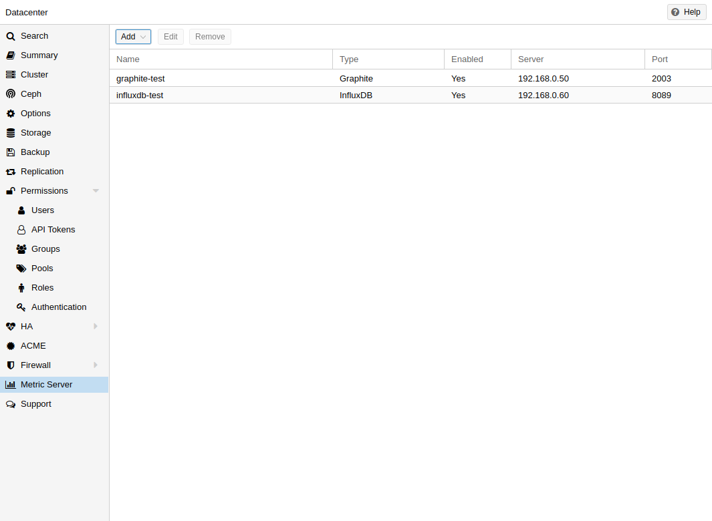
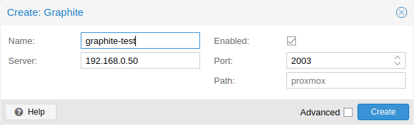
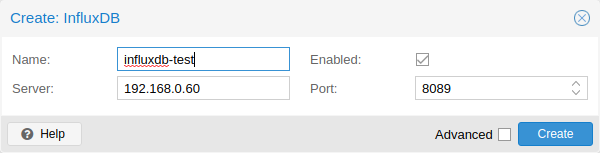

In Proxmox VE, you can define external metric servers, which will periodically receive various stats about your hosts, virtual guests and storages.
Currently supported are:
The external metric server definitions are saved in /etc/pve/status.cfg, and can be edited through the web interface.

The default port is set to 2003 and the default graphite path is proxmox.
By default, Proxmox VE sends the data over UDP, so the graphite server has to be configured to accept this. Here the maximum transmission unit (MTU) can be configured for environments not using the standard 1500 MTU.
You can also configure the plugin to use TCP. In order not to block the
important pvestatd statistic collection daemon, a timeout is required to cope
with network problems.

Proxmox VE sends the data over UDP, so the influxdb server has to be configured for this. The MTU can also be configured here, if necessary.
Here is an example configuration for influxdb (on your influxdb server):
[[udp]] enabled = true bind-address = "0.0.0.0:8089" database = "proxmox" batch-size = 1000 batch-timeout = "1s"
With this configuration, your server listens on all IP addresses on port 8089, and writes the data in the proxmox database
Alternatively, the plugin can be configured to use the http(s) API of InfluxDB 2.x. InfluxDB 1.8.x does contain a forwards compatible API endpoint for this v2 API.
To use it, set influxdbproto to http or https (depending on your configuration). By default, Proxmox VE uses the organization proxmox and the bucket/db proxmox (They can be set with the configuration organization and bucket respectively).
Since InfluxDB’s v2 API is only available with authentication, you have to generate a token that can write into the correct bucket and set it.
In the v2 compatible API of 1.8.x, you can use user:password as token (if required), and can omit the organization since that has no meaning in InfluxDB 1.x.
You can also set the HTTP Timeout (default is 1s) with the timeout setting, as well as the maximum batch size (default 25000000 bytes) with the max-body-size setting (this corresponds to the InfluxDB setting with the same name).